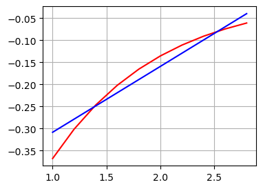
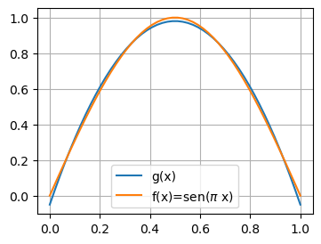

5.2 Minimos quadrados: caso contínuo#
No caso da função \(f(x)\) ser conhecida, podemos ajustar a função \(g(x)\) de modo a minimizar
o que leva a necessidade de resolução do sistema linear
Com \(\langle f,g \rangle\) sendo o produto escalar entre as funções \(f\) e \(g\), definido como
Exemplo 5.2.1: (Arenales, 2016) Usando o método dos mínimos quadrados, aproxime a função \(f(x)=e^{-x}\) no intervalo \([1,3]\) por um polinômio de grau 1 , ou seja, \(g(x)=a_1+a_2 x\).
O sistema de equações normais é dado por:
Assim,
Portanto, o sistema de equações normais é dado por:
Usando o método de eliminação de Gauss, obtemos:
e a reta que melhor se ajusta à \(f(x)=e^{-x}\) no intervalo \([1,3]\) é dada por:
import numpy as np
import matplotlib.pyplot as plt
plt.rcParams['figure.figsize']=(4,3)
# integrção numérica com scipy
from scipy.integrate import quad
A = np.array([[2, 4],
[4, 26/3]])
# por conveniência, vamos obter b numericamente
b = np.array([quad(lambda x: -np.exp(-x), 1, 3)[0],
quad(lambda x: -x*np.exp(-x), 1, 3)[0]])
a = np.linalg.solve(A, b)
print (a)
[-0.4577686 0.14936121]
# define a funcao g(x) para plotar
g = lambda x: a[0]+a[1]*x
# cria pontos (x, y) da reta
Xr = np.arange(1, 3, 0.2)
# Plota os pontos e a reta
plt.plot(Xr, -np.exp(-Xr), "r-", Xr, g(Xr), "b-")
plt.grid()
plt.show()

Exemplo 2: (Burden, 2016) Encontre o polinômio de aproximação por mínimos quadrados de segundo grau para a função \(f(x)=\operatorname{sen} \pi x\) no intervalo \([0,1]\).
Solução: As equações normais para \(P_2(x)=a_2 x^2+a_1 x+a_0\) são
Calculando as integrais, obtemos
Estas três equações em três incógnitas podem ser resolvidas a fim de se obter
Consequentemente, a aproximação polinomial por mínimos quadrados de segundo grau para \(f(x)=\operatorname{sen} \pi x\) em \([0,1]\) é \(P_2(x)=-4,12251 x^2+4,12251 x-0,050465\).
A = np.array([[1,1/2,1/3],
[1/2,1/3,1/4],
[1/3,1/4,1/5]])
# por conveniência, vamos obter b numericamente
b = np.array([quad(lambda x: np.sin(np.pi*x), 0, 1)[0],
quad(lambda x: x*np.sin(np.pi*x), 0, 1)[0],
quad(lambda x: x**2*np.sin(np.pi*x), 0, 1)[0]])
a = np.linalg.solve(A,b)
print(a)
[-0.0504655 4.12251162 -4.12251162]
g = lambda x: a[2]*x**2+a[1]*x+a[0]
x = np.linspace(0,1)
plt.plot(x,g(x), label='g(x)')
plt.plot(x,np.sin(np.pi*x), label='f(x)=sen($\\pi$ x)')
plt.grid()
plt.legend()
plt.show()

Para obter a aproximação polinomial por mínimos quadrados, um sistema linear \((n+1) \times(n+1)\) nas incógnitas \(a_0, \ldots, a_n\) deve ser resolvido e os coeficientes no sistema linear são da forma
A matriz no sistema linear é conhecida como matriz de Hilbert. O sistema gerado não tem uma solução numérica facilmente calculável. É um exemplo típico para ilustrar dificuldades causadas por erros de arredondamento (Burden, 2016).
Exercícios#
1. Encontre a aproximação polinomial por mínimos quadrados linear para \(f(x)\) nos intervalos indicados se:
a. \(f(x)=x^2+3 x+2\),\([0,1] ;\)
b. \(f(x)=x^3, \quad[0,2]\);
c. \(f(x)=\frac{1}{x}, \quad[1,3]\);
d. \(f(x)=e^x, \quad[0,2]\);
e. \(f(x)=\frac{1}{2} \cos x+\frac{1}{3} \operatorname{sen} 2 x,[0,1]\);
f. \(f(x)=x \ln x\), \([1,3]\).
2. Encontre a aproximação polinomial por mínimos quadrados linear no intervalo \([-1,1]\) para as seguintes funções:
a. \(f(x)=x^2-2 x+3\)
b. \(f(x)=x^3\)
c. \(f(x)=\frac{1}{x+2}\)
d. \(f(x)=e^x\)
e. \(f(x)=\frac{1}{2} \cos x+\frac{1}{3} \operatorname{sen} 2 x\)
f. \(f(x)=\ln (x+2)\)